Миссия Protocol
Сделать качество амбулаторной помощи в Беларуси измеримым и прозрачным - для каждого консультативного заключения, до подписи врачом и до попадания данных в ЦИСЗ. Не заменяя врача и МЭЭ, мы даём инструмент соответствия 478 клиническим протоколам Минздрава на потоке 100% КЗ, а пациенту - право проверить своё заключение по тем же стандартам.
Рынок платных медуслуг РБ в 2025 г. - около 2,7 млрд BYN (+24% г/г, оценка Юнитер). Частный сектор - 70-81% платного сегмента (КОЛЛIЕРЗ / SmartPress); в Минске концентрируется ~56% объёма. Рост частных центров ~20%/год. Очереди и дефицит методистов в госсекторе перекладывают спрос на платную амбулаторию. При 25 000 КЗ/мес в МЦ «Кравира» как 1% рынка адресуемый поток частных ОЗ - ~2,5 млн КЗ/мес (30 млн/год). Protocol монетизирует контроль качества на этом потоке, не конкурируя с лечением, а повышая его соответствие стандартам.
Централизованная информационная система здравоохранения (ЦИСЗ) создаёт единое информационное пространство системы здравоохранения РБ (распоряжение Президента №6рп от 08.01.2024). Цели: улучшение качества медуслуг и управляемость отрасли. Частные организации здравоохранения подключаются к протоколам взаимодействия МИС с ЦИСЗ (v.1.2-1.3, FHIR BY). Protocol закрывает разрыв между «врач написал текст» и «пакет принят государством»: проверка до подписи ЭЦП снижает доработки и повышает достоверность регистров для аналитики Минздрава.
Содержание
1. Титульный лист .......................................... 1 2. Содержание .............................................. 2 3. Резюме .................................................. 3 4. Описание проекта ........................................ 5 5. Описание продукции ...................................... 9 6. Анализ рынка и маркетинг ................................ 13 7. Интеллектуальная собственность .......................... 18 8. Потребители и сбыт ...................................... 19 8.1. B2C UX-сценарии (пилот) ............................... 21 9. Ценообразование ......................................... 22 10. Конкуренты ............................................. 24 11. Поставщики .............................................. 26 12. Производственный план .................................. 27 13. Организационный план ................................... 29 14. Риски .................................................. 31 15. Финансовый план ........................................ 32 16. Иные сведения .......................................... 36 17. Непрерывное дообучение моделей ......................... 38 Приложения А-Ж: прайс, дорожная карта, KPI, графики, ROI, рынок РБ Приложение И: ML-контур и MLOps (ml/, export_training_feedback.py) Глоссарий: TAM, SAM, SOM, B2B, B2C, EBITDA - расшифровки и сверка формул Электронные приложения: 05_Biznes_plan_Prilozheniya.html, 06_ROI_Kravira.html Рекомендуемый объём: 10-40 страниц основного текста; детальные расчёты - в приложениях.
3. Резюме
Идея проекта. Автоматизировать предимпортную экспертизу консультативных заключений (КЗ) до подписи ЭЦП в частных медицинских организациях Республики Беларусь и предоставить всем пациентам частного сектора сервис проверки своего КЗ по официальным клиническим протоколам Минздрава (478 документов).
Масштаб рынка. МЦ «Кравира» (25 000 КЗ/мес) - якорь и пилот (~1% рынка), но продукт адресован всему сегменту частных ОЗ РБ: ~2,5 млн КЗ/мес, 30 млн/год, ~2,7 млрд BYN платных медуслуг (2025). B2B масштабируется на 3-8 клиник к 2029 г.; B2C - на любого пациента, получившего КЗ в партнёрской или любой частной ОЗ.
Решение. Protocol: scoring 482+ правил, ЦИСЗ FHIR BY, send_gate для МИС. Три канала: B2B (0,69-0,99 BYN/КЗ), API МИС, B2C с tier-ценами 4,99-14,99 BYN (терапия → онкология/pre-op) и rev-share 30% клинике при оплате по ссылке.
Финансовый вывод. Осторожный план 2029: выручка ~2,32 млн BYN, EBITDA ~+1,67 млн/год (~139 тыс./мес). Расширенный сценарий (+8 каналов: L2, подписка методслужбы, обучение, OEM, медтуризм, корпоративные аудиты): выручка до ~3,5 млн, EBITDA до ~2,5 млн/год (~205 тыс./мес).
Запрос. Сертификат ГКНТ (~24 тыс. BYN) на интеграцию МИС и масштабирование на сеть частных ОЗ РБ.
Масштаб рынка: все частные ОЗ и все пациенты РБ
Якорь 25 000 КЗ/мес в Кравире = 1% рынка частных ОЗ РБ. Продукт масштабируется на весь сегмент 2,5 млн КЗ/мес (30 млн/год): B2B - проверка потока в каждой подключённой клинике; B2C - любой пациент частного сектора, получивший КЗ в любой ОЗ-партнёре или загрузивший PDF самостоятельно.
| Tier B2C | Specialty | BYN | Микс |
|---|---|---|---|
| Базовый L1 | терапия, простой приём | 4,99 | 38% |
| Расширенный L1+ | специалист + анализы в КЗ | 6,99 | 22% |
| Стандарт L2 | подробный разбор | 9,99 | 18% |
| Онкология L2 | онко, хроника, ЗНО | 14,99 | 12% |
| Предоперационный L2 | pre-op, высокий риск | 12,99 | 10% |
Социальная значимость: кому и как помогает Protocol
Пациенты и семьи
- B2C-сервис: загрузить своё консультативное заключение и получить понятный отчёт - соответствует ли оказанная помощь официальным клиническим протоколам Минздрава РБ (478 документов).
- Пациент видит не «оценку врача», а сопоставление с государственным стандартом - с цитатами из протокола, что именно должно было быть в КЗ.
- Снижение тревожности: «мне назначили то, что положено по стандарту» или «есть повод задать врачу уточняющие вопросы» - до обращения в МЭЭ или смены клиники.
- QR на чеке/КЗ в партнёрской клинике - проверка за 4,99 BYN без очереди к методисту.
- Особенно ценно при хронических заболеваниях, онкологии, беременности - где протоколы детализированы и ошибка в назначениях критична.
- Дисклеймер: не замена врача и не юридическое заключение; инструмент информированного участия пациента в своём лечении.
Врачи и средний медперсонал
- L0 <2 с при сохранении КЗ в МИС: врач видит send_gate (можно подписать / предупреждение / блок) до ЭЦП - исправляет КЗ пока контекст свежий.
- 482+ детерминированных правил с цитатами из PDF Минздрава - не нужно держать в голове сотни протоколов; система подсказывает пробел в обследованиях, лечении, оформлении.
- LLM только для пояснений (L2); решение о блокировке - по правилам. Врач не зависит от «чёрного ящика» нейросети.
- Снижение стресса от отклонения пакета в ЦИСЗ после подписи: cisz_readiness проверяет Bundle/Composition до отправки.
- Меньше возвратов от методслужбы и администраторов - время на пациента, а не на переписку по формальным замечаниям.
- Обучающий эффект: повторяющиеся gate_score <70 показывают зоны для повышения квалификации без публичного наказания.
Медицинские центры и методслужбы
- Масштаб: ручной аудит методистом охватывает 2-5% КЗ при стоимости ~34 BYN/проверенное заключение; Protocol L0 - 0,69 BYN при 100% потока (25 000+ КЗ/мес в Кравире).
- Единый send_gate: клинические протоколы + ЦИСЗ FHIR BY в одном решении для МИС - не два разрозненных контроля.
- Репутация и NPS: меньше отклонённых пакетов в государственный контур, меньше доработок «после факта».
- B2C white-label: клиника предлагает пациенту «Проверить заключение» - дифференциатор сервиса и дополнительный канал доверия.
- KPI для руководства: gate_score, cisz_score, динамика по блокам (диагноз, лечение, безопасность) - управленческая аналитика качества.
- On-prem в РБ: персональные данные не покидают контур клиники на уровне L0.
Государство и система здравоохранения
- ЦИСЗ (распоряжение Президента РБ №6рп от 08.01.2024): частные ОЗ подключаются к единому информационному пространству; Protocol снижает долю некачественных структурированных пакетов до попадания в национальный контур.
- 478 клинических протоколов Минздрава - нормативная база качества; автоматизированный контроль исполнения на амбулаторном уровне дополняет выборочную МЭЭ.
- Прозрачность для регулятора: детерминированный scoring с evidence_map - воспроизводимый аудит, не субъективная оценка LLM.
- Снижение нагрузки на методслужбы Минздрава и учреждений: первичный фильтр качества КЗ - на стороне ОЗ до передачи в ЦИСЗ.
- Импортозамещение: отечественный продукт с корпусом КП РБ; зарубежные CDSS (UpToDate, Isabel) не содержат белорусских протоколов и FHIR BY.
- Перспектива масштабирования на госсектор после пилота в частных ОЗ - единая методология качества КЗ по стране.
Мировые аналоги и отличие Protocol
CDSS (Clinical Decision Support) существуют более 40 лет (AHRQ/ONC); >90% больниц США используют EHR с CDS. Зарубежные решения не закрывают связку «КП конкретной страны + предподпись ЭЦП + FHIR + B2C для пациента» для Беларуси.
| Решение | Регион | Тип | Почему не заменяет Protocol |
|---|---|---|---|
| UpToDate / DynaMed | США, глобально | CDSS, справочник + рекомендации | Справочник для врача, не проверка каждого КЗ |
| Isabel / DXplain | Великобритания | Дифференциальная диагностика | Диагностика, не compliance КЗ |
| Epic / Cerner CDS hooks | США | Встроенные правила в EHR | Инфраструктура EHR, не КП государства |
| Infera / Zebra Medical | Израиль / глобально | AI-CDSS по guidelines | AI без evidence_map по КП РБ |
| MedAware / BD Medication | Израиль / США | Безопасность назначений | Pharmacovigilance, не полный КЗ |
| Свободные LLM-чаты (ad hoc) | Глобально | Свободный LLM-чат | Не медицинский продукт |
| Protocol (МЦ «Кравира») | Беларусь | Предпроверка КЗ + ЦИСЗ + B2C | Единственный контур «КП РБ + ЭЦП + FHIR BY + пациент» |
4. Описание проекта
Ситуация в отрасли. Цифровизация здравоохранения Республики Беларусь ускорилась с внедрением Централизованной информационной системы здравоохранения (ЦИСЗ) и профиля FHIR BY 5.0. Частные амбулаторно-поликлинические организации обязаны формировать консультативные заключения (КЗ) по стандартам и передавать структурированные данные в государственный контур. В системе здравоохранения РБ действуют 1 394 амбулаторно-поликлинические организации; платный сегмент концентрируется в частных центрах, преимущественно в Минске (~56% объёма).
Макроэкономика платной медицины. По отраслевым оценкам, рынок платных медуслуг РБ в 2025 г. составил ~2,7 млрд BYN при росте ~24% к предыдущему году. Доля частного сектора в платных услугах - 70-81% (данные КОЛЛIЕРЗ / SmartPress). Рост выручки частных центров в Минске - около 20% в год (2018-2023). Это создаёт устойчивый поток КЗ, который невозможно контролировать вручную на каждом этапе.
Существующая проблема: (1) методслужба не масштабируется на поток 25 000+ КЗ/мес в крупной клинике; (2) отклонения пакетов в ЦИСЗ влекут доработки и репутационные риски; (3) пациенты не имеют инструмента проверки соответствия оказанной помощи протоколам; (4) врач не может оперативно сверять каждое заключение с полным корпусом из ~478 клинических протоколов Минздрава.
Цель проекта: коммерциализация Protocol как B2B-сервиса для клиник и B2C-сервиса для физических лиц на национальном рынке РБ.
Задачи на 2026-2028: пилот и production L0 в МЦ «Кравира»; интеграция API в МИС «Айболит»; запуск B2C-витрины с оплатой; подключение 3-10 B2B-клиентов; регистрация программы для ЭВМ в НЦИС; достижение 3% рынка к 2028 г. и 8% к 2029 г.
Ожидаемый эффект для отрасли: снижение доли отклонённых пакетов ЦИСЗ, повышение прозрачности качества помощи для пациентов, высвобождение 0,3-0,5 FTE методиста на крупную клинику.
Социальная значимость (подробно - раздел «Социальная значимость» в PDF-версии бизнес-плана): - Пациенты получают B2C-инструмент проверки КЗ по 478 протоколам Минздрава с цитатами из стандарта. - Врачи - подсказку L0 <2 с до ЭЦП, без «чёрного ящика» LLM в решении send_gate. - Медцентры - 100% охват потока вместо 2-5% выборочного аудита; единый контур клиника + ЦИСЗ. - Государство - более качественные данные в ЦИСЗ и исполнение клинических протоколов на амбулаторном уровне.
5. Описание продукции (услуг)
Наименование продукции: программный комплекс Protocol (SaaS / on-prem) - информационная система поддержки контроля качества медицинской документации. Позиционирование: не медизделие, не замена врача и МЭЭ, не юридическое заключение для B2C.
Отличия от аналогов на рынке: - корпус ~478 PDF клинических протоколов Минздрава РБ с цитатами в отчёте (evidence_map); - детерминированный scoring (8 блоков, 482+ правил, gate_score, soft_gate); - два контура в одном send_gate: клинические протоколы + готовность ЦИСЗ (FHIR BY 3.2.1); - tiering L0/L1/L2: массовая проверка <2 с без LLM (L0) для каждого КЗ в МИС; - единый REST API для интеграции с МИС «Айболит» и другими вендорами.
Функции B2B: поиск КП по МКБ-10, cisz_readiness, send_gate (allow / warn / block), REST API L0-L2, отчёт для методслужбы с цитатами из протоколов.
Функции B2C: загрузка PDF своего КЗ физлицом; отчёт на русском языке о соответствии помощи протоколам; дисклеймер (не диагноз, не юридическое заключение); удаление файла после сессии.
Технология: Python/FastAPI, гибридный RAG, детерминированные правила; опционально LLM для L2. Развёртывание в защищённом контуре РБ (см. architecture-kravira-fhir-mis.pdf). Серверные требования: 2-4 GB RAM на площадку, Docker.
Жизненный цикл продукта: еженедельная синхронизация корпуса КП Минздрава; ежемесячные релизы правил; квартальный аудит методистом; непрерывное дообучение локальных моделей (см. раздел «Непрерывное дообучение» и каталог ml/).
Архитектура ML: детерминированное ядро (send_gate) + дообучаемые embedder/reranker/entailment в контуре РБ; сбор feedback data/ml/feedback/; экспорт scripts/export_training_feedback.py.
6. Анализ рынка и маркетинг
Продукты и услуги отрасли: амбулаторная помощь, ведение ЭМК, МИС, передача данных в ЦИСЗ, методический контроль КЗ, медицинский туризм (>160 тыс. иностранных пациентов в 2024 г.).
География: национальный рынок (РБ); приоритет - Минск и крупные частные сети; экспорт в русскоязычные юрисдикции с похожей нормативкой - перспектива 2029+.
B2B-сегмент: частные ОЗ. МЦ «Кравира» - 25 000 КЗ/мес, ~1% рынка частных ОЗ, отсюда оценка сегмента ~2,5 млн КЗ/мес (~30 млн/год). SAM (5% TAM, клиники с потоком >5 000 КЗ/мес и готовностью к ЦИСЗ) - 1,5 млн КЗ/год. SOM год 3 - 2,4 млн КЗ/год (8% TAM).
B2C-сегмент: все пациенты частных ОЗ РБ (~30 млн получений КЗ/год). МЦ «Кравира» - первый white-label партнёр; масштаб - любая частная клиника и любой пациент с PDF КЗ. Tier-цены 4,99-14,99 BYN (терапия → онкология/pre-op); средний чек пациента ~8,33 BYN (микс tier). Rev-share 30% клинике при оплате по SMS/QR-ссылке - доп. доход ОЗ без затрат на методиста.
Конверсия B2C (осторожный сценарий): 0,02% TAM в год 1 (~6,7 тыс. проверок), 0,23% в год 3 (~69,6 тыс.) → выручка Protocol ~440 тыс. BYN (~6,33 BYN Protocol/проверка с учётом rev-share 30%). Базовый 0,33% TAM - ~626 тыс. BYN B2C; оптимистичный 0,5% - ~949 тыс. BYN.
Маркетинг B2B: кейс Кравиры с ROI; конференции ЦИСЗ/Минздрава; прямые продажи в сети частных ОЗ Минска и регионов; OEM через EPAM/Айболит.
Маркетинг B2C: QR «Проверить заключение»; SMS со ссылкой от клиники (rev-share); SEO «проверить КЗ Беларусь»; tier-прайс по specialty.
Тренды: ужесточение требований ЦИСЗ; дефицит методистов; принятие ИИ при прозрачном детерминированном scoring; рост частных центров ~20%/год в Минске.
Детальная таблица рынка TAM/SAM/SOM, контекст РБ и графики - таблицы 1-1а, 9 и приложения.
7. Интеллектуальная собственность
Используются объекты ИС участника. Исходный код и база правил - исключительные права МЦ «Кравира» (договоры с разработчиками). Регистрация программы для ЭВМ в НЦИС (БелГИСС). Режим коммерческой тайны для каталога правил и конфигураций gate. Патентная чистота: открытые PDF Минздрава, FHIR BY, собственная реализация scoring и send_gate. Лицензирование B2B - договор оказания услуг / лицензионный договор на API.
8. Потребители и сбыт
Основные потребители B2B: все частные медицинские центры и сети ОЗ Республики Беларусь; методслужбы; вендоры МИС. Якорный пилот - МЦ «Кравира» (~25 000 КЗ/мес, 207 тыс. BYN/год B2B); к 2029 г. - 8 клиник (1,59 млн BYN B2B помимо Кравиры).
Сегментация B2B: (1) крупные сети 25k+ КЗ/мес - «Сеть» 0,69 BYN; (2) клиники 5-10k - «Клиника» 0,79 BYN; (3) малые ОЗ - «Старт» 0,99 BYN; (4) OEM через МИС.
Потребители B2C: все физические лица - пациенты любой частной клиники РБ, желающие проверить КЗ по протоколам Минздрава; родственники; медтуристы.
Сбытовая политика B2C: веб-витрина protocol.by/check; ERIP и карты; SMS/email со ссылкой от клиники (rev-share 30/70); QR на выдаваемом КЗ; tier-цены по specialty (онкология 14,99, pre-op 12,99 BYN).
Каналы продвижения: личные продажи B2B по сети частных ОЗ; партнёрская программа B2B2C (клиника рассылает ссылку - получает 30% оплаты); контент-маркетинг; конкурс Белинфонд для PR.
B2C UX: три сценария - QR после визита (любая ОЗ-партнёр), SMS со ссылкой (rev-share), национальный вход SEO. Подробно - раздел 8.1 PDF.
8.1. B2C: UX, tier-цены и rev-share (национальный рынок)
B2C направлен на всех пациентов частных клиник Беларуси (~30 млн получений КЗ/год), не только на пациентов МЦ «Кравира». Кравира - якорь пилота и первый white-label партнёр; масштаб - сеть ОЗ РБ. Монетизация B2C двусторонняя: пациент получает уверенность в соответствии КЗ протоколам Минздрава; клиника - доп. доход (rev-share 30% от оплаты по ссылке/SMS) и дифференциатор сервиса; Protocol - 70% выручки B2C + рост B2B-лидов. Цена зависит от сложности приёма и специальности (терапия 4,99 → онкология 14,99 BYN).
QR после визита (любая клиника-партнёр)
Триггер: Пациент любой частной ОЗ получает КЗ + QR «Проверить по протоколам Минздрава».
Landing:
- «Соответствует ли ваше заключение клиническим протоколам Минздрава?»
- Тариф подбирается: терапия 4,99 · специалист+анализы 6,99 · онко 14,99 · pre-op 12,99
- 478 протоколов · цитаты · файл удаляется после сессии
Отчёт L1:
- Итог по 8 блокам + вердикт «спокойно / уточнить у врачу»
- 2-3 замечания с цитатами КП
- 3 шага «что делать дальше»
L2: Пояснения простым языком + вопросы врачу; для онко/pre-op - приоритет блоков «лечение» и «безопасность»
Scope: ?clinic= + ?tier= или авто из МКБ/тега приёма
SMS/email со ссылкой (rev-share клинике)
Триггер: Клиника после приёма: «Проверьте заключение - от 2,99 BYN, 30% остаётся клинике»
Landing:
- Бренд клиники крупно; Protocol - «технология проверки по КП Минздрава»
- Прозрачно: «Клиника получает часть оплаты за сервис качества»
- Промо 2,99 BYN - вход; upsell на L2 по specialty
Отчёт L1:
- Patient view без технических полей B2B
- Footer: «Проверено для [Клиника] · Protocol»
L2: Доп. доход клиники: при 14,99 онко → ~4,50 BYN клинике, ~10,50 Protocol за проверку
Scope: Rev-share 30/70, договор B2B2C; витрина patient.html (PWA), без отдельного нативного приложения
Национальный вход (SEO / без клиники)
Триггер: Пациент ищет «проверить консультативное заключение Беларусь»
Landing:
- Акцент: все частные пациенты РБ, не привязка к одной клинике
- Выбор tier вручную или авто по тексту КЗ
Отчёт L1:
- Стандартный patient view
L2: Рекомендация «обратиться в клинику, где получено КЗ» + опционально список партнёров
Scope: Полная матрица цен; без rev-share если нет clinic_id
| Tier | Specialty / приём | BYN | Микс |
|---|---|---|---|
| Базовый L1 | Терапия, простой приём | 4,99 | 38% |
| Расширенный L1+ | Специалист + анализы в КЗ | 6,99 | 22% |
| Стандарт L2 | Подробный разбор | 9,99 | 18% |
| Онкология L2 | Онко, ЗНО, хроника | 14,99 | 12% |
| Предоперационный L2 | Pre-op, высокий риск | 12,99 | 10% |
| Промо по ссылке клиники | Вход с SMS/QR партнёра | 2,99 | upsell → tier |
| Продукт | Оплата пациента | Клинике 30% | Protocol 70% |
|---|---|---|---|
| Промо L1 | 2,99 | 0,90 | 2,09 |
| Стандарт L2 | 9,99 | 3,00 | 6,99 |
| Онкология L2 | 14,99 | 4,50 | 10,49 |
| Pre-op L2 | 12,99 | 3,90 | 9,09 |
| Блок отчёта | Содержание | Зачем |
|---|---|---|
| Итог по 8 блокам | «6 OK, 2 замечания» | Мгновенная ценность для пациента |
| Вердикт | «Спокойно» / «Уточнить у врачу» | Уверенность без обвинения врача |
| Цитаты КП | 2-3 пункта из протокола Минздрава | Отличие от свободных LLM |
| Tier онко/pre-op | Приоритет лечение + безопасность | Обоснование высокой цены |
| Rev-share клинике | 30% в отчёте для партнёра | Мотивация рассылать ссылку |
| Дисклеймер | Не диагноз, не МЭЭ | Юридическая ясность |
| Сценарий | Конверсия | Сложность |
|---|---|---|
| 1. QR после визита | Средняя | Минимальная - любая ОЗ-партнёр |
| 2. SMS/email rev-share | Высокая | Основной канал масштаба |
| 3. Национальный SEO | Средняя | 2028+, без rev-share |
Вне scope (не делаем в 2026-2027):
- Личный кабинет и история проверок
- Регистрация до оплаты
- Сравнение врачей между клиниками
- Отдельное мобильное приложение
9. Ценообразование
Ценовая политика основана на микроплатеже за одну проверку КЗ (модель pay-per-use), что снижает барьер входа для клиник по сравнению с крупными лицензиями МИС.
B2B (за 1 проверку КЗ, уровень L0): - Розница: 0,99 BYN - Пакет 10 000/мес: 0,79 BYN (мин. 5 000 BYN/мес) - Пакет 25 000+/мес: 0,69 BYN (мин. 12 000 BYN/мес, тариф МЦ «Кравира») - L2 для методиста: +0,50 BYN - Внедрение API в МИС: 15-40 тыс. BYN разово + поддержка 3-5 тыс. BYN/год
Себестоимость L0 B2B: ~0,06-0,12 BYN/КЗ (маржа 85-94% при 0,99 BYN; 83-91% при 0,69 BYN).
B2C (физические лица, tier по specialty): - Базовый L1 (терапия, простой приём): 4,99 BYN - Расширенный L1+ (специалист + анализы в КЗ): 6,99 BYN - Стандарт L2 (подробный разбор): 9,99 BYN - Онкология L2 (онко, ЗНО, хроника): 14,99 BYN - Предоперационный L2 (pre-op, высокий риск): 12,99 BYN - Промо по ссылке клиники (SMS/QR): 2,99 BYN → upsell на tier - Rev-share: 30% оплаты - клинике-партнёру, 70% - Protocol
Средний чек B2C (микс tier): ~8,33 BYN. Выручка Protocol с проверки ~6,33 BYN (80% канал rev-share × 70% + 20% прямой). Пример: онко 14,99 → клинике 4,50 BYN, Protocol 10,49 BYN.
Себестоимость B2C L1: ~0,15-0,25 BYN (PDF, без хранения ПДн). Валовая маржа Protocol после rev-share: 65-85% в зависимости от tier.
Обоснование цены: ручной аудит методистом - эквивалент ~34 BYN/проверенное КЗ при охвате 2-5% потока; Protocol L0 - 0,69 BYN при 100% охвате.
Прайс-листы, таблица себестоимости, маржа по тарифам и график тарифной лестницы - таблицы 2-4, 9 и приложение А.
9.2. Дополнительная монетизация (рост выручки и прибыли)
Базовый план (B2B микроплатёж + B2C tier + API) - консервативный фундамент. Ниже - восемь дополнительных каналов, которые естественно вытекают из продукта: методслужба, обучение, OEM, медтуризм, корпоративные аудиты. Они не требуют нового ядра - только упаковку, продажи и договоры. Суммарный upside к 2029: +1,2 млн BYN/год к осторожному сценарию (выручка до ~3,5 млн, EBITDA до ~2,5 млн/год ≈ 205 тыс./мес).
| Канал | Цена | План тыс. | Драйвер | Вероятн. | Старт |
|---|---|---|---|---|---|
| B2B L2 для методиста | +0,50 BYN/КЗ | 180 | 15% потока B2B (200 тыс. КЗ/мес) с доп. разбором | 75% | 2028 |
| Подписка «Методслужба Pro» | 25 000 BYN/год | 200 | Дашборд, квартальный аудит, 8 ОЗ | 65% | 2028 |
| Обучение врачей (курсы КП) | 800-1 500 BYN/место | 120 | 12 сессий × 10-15 врачей, очно/онлайн | 55% | 2027 |
| OEM/API премиум (МИС) | 50-120 тыс. внедрение | 125 | Доп. к базовым 75 тыс.: 2-й вендор + SLA | 52% | 2029 |
| B2C медтуризм | 19,99 BYN/проверка | 95 | ~8 500 проверок иностранных пациентов | 45% | 2029 |
| Корпоративный аудит КЗ | 60-100 тыс./договор | 160 | Страховщики, ДМС, корп. клиенты клиник | 40% | 2029 |
| White-label Enterprise | 8 000 BYN/мес | 192 | 2 сети ОЗ: свой бренд B2C + API | 35% | 2029 |
| Аналитика для руководства ОЗ | 12 000 BYN/мес | 144 | Агрегированные KPI качества КЗ (без ПДн) | 50% | 2029 |
| Сценарий 2029 | Выручка | EBITDA | Комментарий |
|---|---|---|---|
| Осторожный | 2 315 | +1 665 | 8% TAM B2B |
| Базовый | 2 976 | +2 256 | 10% TAM |
| Оптимистичный | 3 799 | +2 949 | 12% TAM |
| Расширенный | 3 531 | +2 601 | базовый + 8 каналов |
10. Конкуренты
Конкурентный анализ показывает отсутствие в Республике Беларусь готового продукта «корпус КП Минздрава + предпроверка Bundle до ЭЦП + B2C для пациентов».
Основные альтернативы: ручной аудит методслужбы (2-5% потока, ~34 BYN/КЗ); зарубежные CDSS без КП РБ; свободные LLM-чаты (риск ПДн, нет send_gate); встроенные шаблоны МИС без evidence_map.
Конкурентные преимущества Protocol: 100% охват потока L0; локальный корпус КП; интеграция ЦИСЗ; прозрачный детерминированный scoring; три канала монетизации.
Подробная сравнительная таблица с оценкой по 5 критериям - таблица 5.
11. Поставщики
Поставщики и контрагенты: - хостинг / виртуальные машины в дата-центре РБ (on-prem площадка клиники или облако РБ); - платёжные агрегаторы для B2C (ERIP, эквайринг банков РБ); - опционально облачный LLM API или on-prem LLM для уровня L2; - НЦИС (БелГИСС) - регистрация программы для ЭВМ; - EPAM / вендор МИС «Айболит» - интеграционные работы; - юридическое сопровождение договоров B2B/B2C и политики ПДн.
Материалы: не требуются (программный продукт). Сервер 2-4 GB RAM на площадку. Лицензии ПО - open source (Python, FastAPI) + собственная разработка.
План закупок на 2026-2027: серверное оборудование ~10 тыс. BYN; интеграция МИС ~40 тыс. BYN; маркетинг пилота ~20 тыс. BYN (см. таблицу инвестиций).
12. Производственный план
Производственный процесс - тиражирование экземпляров ПО и сопровождение: 1. Развёртывание Docker/on-prem на площадке заказчика (1-2 недели). 2. Еженедельная синхронизация корпуса PDF Минздрава. 3. Обновление каталога правил и конфигураций gate (релизы). 4. Для B2C - изолированный публичный контур с удалением загруженных файлов после сессии. 5. Мониторинг SLA L0 <2 с, uptime 99,5%.
Материально-техническая база: серверная инфраструктура МЦ «Кравира»; рабочий прототип развёрнут. Потребность в новом оборудовании - умеренная (1 сервер на площадку, ~3-5 тыс. BYN).
Производственная мощность: один сервер L0 обрабатывает до 500 000 КЗ/мес; масштабирование горизонтальное.
13. Организационный план
Организация-исполнитель: ОДО «Медицинский центр «Кравира»». Кадровая структура проекта - таблица 6.
График работ (ключевые вехи): - Q3-Q4 2026: production L0 on-prem, подготовка B2C beta, регистрация ПО; - Q1-Q2 2027: API в МИС «Айболит», метрики пилота, ROI-отчёт; - Q3-Q4 2027: коммерческие договоры с 2-3 внешними ОЗ, B2C ERIP; - 2028: масштабирование на 5-10 клиник, 3% рынка; - 2029: 8% рынка, white-label МИС.
Ответственный по проекту: Кузавка П.Л. (цифровая трансформация и ИТ). Методологическое руководство: главврач / методслужба Кравиры.
ФОТ проекта (оценка): ~180 тыс. BYN в год 1, рост до 420 тыс. BYN в год 3 (см. таблицу OPEX).
14. Риски
Финансовые и иные риски проекта систематизированы в таблице 7.
Ключевые риски: обработка ПДн в B2C; изменение клинических протоколов Минздрава; низкая готовность платить малыми клиниками; регуляторная квалификация продукта; задержка интеграции МИС; конкуренция со стороны вендоров МИС.
Митигация: on-prem L0 без выноса ПДн; автосинхронизация корпуса КП; ROI через снижение отказов ЦИСЗ (см. 06_ROI_Kravira.html); позиционирование как СПО/ИС; пилот с EPAM; QR-кампании для B2C через партнёрские клиники; резерв на юридическое сопровождение 30 тыс. BYN.
Страховые меры: договоры SLA с клиентами B2B; политика обработки ПДн; регистрация ПО в НЦИС.
15. Финансовый план
Финансовый план на 3 года (осторожный сценарий) представлен в таблицах 8, 10-12 и на графиках в приложениях Г, З, И.
Исходное допущение рынка: 25 000 КЗ/мес в Кравире = 1% платных КЗ частного сектора РБ, адресуемый рынок 2,5 млн КЗ/мес (30 млн/год).
Доходы год 1 (2027): B2B Кравира 207 + B2C 42 = 249 тыс. BYN; OPEX 280 тыс.; EBITDA −31 тыс. (~−2,6 тыс./мес).
Доходы год 2 (2028): B2B 675 + B2C 152 + API 25 = 852 тыс. BYN; OPEX 420 тыс.; EBITDA +432 тыс. (~+36 тыс./мес, 3% TAM B2B).
Доходы год 3 (2029), осторожный: B2B 1 800 + B2C 440 + API 75 = 2 315 тыс. BYN; OPEX 650 тыс.; EBITDA +1 665 тыс. (~+139 тыс./мес, 8% TAM B2B = 200 тыс. КЗ/мес из 2,5 млн). Базовый (10% TAM): EBITDA ~+2 256 тыс.; оптимистичный (12%): ~+2 949 тыс.
Пояснение TAM vs EBITDA: теоретический потолок B2B при 100% TAM - ~22,5 млн BYN/год; план 2029 использует 8% проникновения - это сознательно осторожная модель, не недооценка рынка.
Структура OPEX: ФОТ 64%, инфраструктура 13%, маркетинг 13%, прочее 10% (см. таблицу 11 и график OPEX).
Инвестиции 2026-2027: интеграция МИС 40 тыс.; B2C-витрина 25 тыс.; регистрация ПО 15 тыс.; сервер 10 тыс.; маркетинг 20 тыс. Итого ~110 тыс. BYN. Источники: сертификат ГКНТ (571 б.в. × 42 BYN ≈ 24 тыс. BYN), собственные средства Кравиры, reinvest EBITDA с 2028 г.
ROI якорного клиента - приложение Ж (06_ROI_Kravira.html): экономия ~3,5 тыс. BYN/мес vs затраты 17,25 тыс. BYN/мес на Protocol при полном охвате - окупаемость через снижение доработок ЦИСЗ и высвобождение методиста.
Cash flow: отрицательный в 2027 (−31 тыс. EBITDA), положительный с 2028 (+432 тыс., +1 665 тыс. осторожный / до +2 949 тыс. оптимистичный).
16. Иные сведения
Иные сведения: бизнес-план дополнен приложениями А-И в соответствии с рекомендациями Белинфонда (объём 10-40 страниц, расчёты в приложениях).
Электронная версия приложений: 05_Biznes_plan_Prilozheniya.html (графики Chart.js, таблицы рынка РБ, P&L, cash flow), ROI: 06_ROI_Kravira.html, чек-лист: docx-preprint-checklist.md.
ML-контур: каталог ml/ (configs, datasets, train, eval, registry), data/ml/feedback/, scripts/export_training_feedback.py. Раздел 17 PDF - непрерывное дообучение.
Архитектура: architecture-kravira-fhir-mis.pdf. Презентация MVP: mvp-presentation.html.
Источники рыночных данных: отраслевые обзоры платной медицины РБ (Uniter, SmartPress, КОЛЛIЕРЗ); данные Минздрава РБ; внутренние метрики МЦ «Кравира» (25 000 КЗ/мес).
Контакт для уточнений: Кузавка П.Л., akuazuk@gmail.com, +375 29 608-75-95.
17. Непрерывное дообучение моделей
Непрерывное дообучение - стратегия развития Protocol после пилота в МЦ «Кравира». Продукт не заменяет детерминированное ядро (send_gate, CISZ) нейросетью: модели улучшают retrieval, medical entailment и structured extraction, а решение о подписи остаётся воспроизводимым по правилам с evidence_map.
Статус на 2026: выполнен первый цикл ML - export 313 пар, fine-tune local embedder (e5-small), офлайн MRR@10 вырос с 0,12 до 0,41 (5-fold CV); A/B на consult_gold и golden RAG в полном retrieve(): rule checker 9/9 (100%) без изменений; RAG по тексту КЗ 9/9 (100%) на обоих плечах; golden 14/18 (77,8%) - без прироста на текущих метриках (гастро-КЗ уже однозначны для лексического+semantic поиска).
Три уровня ML в продукте: 1) RAG - domain embedder + cross-encoder reranker на корпусе ~478 КП Минздрава (on-prem, без облачного LLM на L0). 2) Сопоставление терминов КЗ - entailment-модель по меткам методслужбы (required_exam, keyword rules). 3) Summary cards - student-модель на approved карточках протоколов (human-in-the-loop).
Цикл данных: production L0-L2 → data/ml/feedback/ → export_training_feedback.py → ml/datasets/ → fine-tune → eval (golden + consult_gold) → ml/registry/model_manifest.json → деплой local embedder.
Следующий шаг пилота: retrieval_fix от методиста, reranker, закрытие 4 провалов golden (E11, K85, I50).
Подробные таблицы эксперимента, A/B и roadmap - приложение И, ml/experiments/.
17. Непрерывное дообучение моделей Protocol
Protocol спроектирован как гибридная система: детерминированное ядро (482+ правил, send_gate, CISZ) принимает решение о подписи КЗ, а дообучаемые модели улучшают поиск протоколов, сопоставление медтерминов и структурирование данных - без «чёрного ящика» в блокировке ЭЦП. Отличие от свободных LLM-чатов и зарубежных CDSS: корпус ~478 КП Минздрава РБ + цикл human-in-the-loop от методслужбы Кравиры + локальное развёртывание моделей в контуре Республики Беларусь (on-prem, без выноса ПДн на L0). Статус на 2026: в production - правила, semantic RAG, опциональный LLM API. Выполнен пилотный fine-tune local embedder (e5-small, 313 пары, эксперимент embedder_exp_001) и A/B на consult_gold + golden RAG. Деплой локальной модели в production retrieve - фаза 1 (Q4 2026).
Результаты эксперимента embedder (июнь 2026)
| Метрика | Baseline e5 | Fine-tune | Δ |
|---|---|---|---|
| MRR@10, 5-fold CV (seed 313 пар) | 0,12 | 0,41 | +0,29 |
| Recall@1, CV | ~8% | ~28% | +20 п.п. |
| Golden hold-out MRR@10 (13 запр.) | 0,17 | 0,33 | +0,16 |
| Время обучения (CPU) | - | ~83 мин | 5-fold + final |
A/B: baseline vs fine-tune в retrieve()
| Слой оценки | Baseline e5 | Fine-tune | Δ |
|---|---|---|---|
| Rule checker consult_gold (9 КЗ) | 100% | 100% | 0 |
| RAG по тексту КЗ, релевантный КП в топ-5 | 100% | 100% | 0 |
| Golden RAG retrieve() (18 запр.) | 77,8% | 77,8% | 0 |
Интерпретация A/B: детерминированный разбор КЗ (send_gate, rule_checker) не использует embedder - без изменений. На гастро-эталоне полный retrieve() уже находит нужные КП и с baseline e5: тексты КЗ богаты диагнозом и МКБ. Прирост MRR в офлайн-эксперименте проявился на seed-парах title→path; для продакшена следующий шаг - hard negatives от методиста, cross-encoder reranker и фиксация 4 провалов golden (E11, K85, I50, негатив).
Принцип: что обучается, а что нет
| Компонент | Механизм | Обучение |
|---|---|---|
| send_gate / gate_score | Только правила | Не обучается end-to-end |
| CISZ critical gaps | FHIR BY чек-лист | Версионирование нормативки |
| RAG retrieval | Embedder + reranker | Fine-tune / LoRA ежемесячно |
| required_exam в КЗ | Entailment matcher | Метки методиста |
| Summary cards КП | Structured extractor | Approved drafts → student |
| L2 пояснения | Explainer (optional) | JSON compliance → текст |
Цикл MLOps
- Production L0-L2 пишет обезличенные события (hash текста, scores, latency, rule overrides).
- Методист исправляет retrieval и rule outcomes → data/ml/feedback/*.jsonl.
- export_training_feedback.py формирует ml/datasets/ (retrieval, entailment, kz_regression).
- Fine-tune (LoRA) на GPU в контуре РБ; eval vs golden queries и consult_gold.jsonl.
- Успешный прогон → ml/registry/model_manifest.json → деплой sidecar (RAG_EMBED_BACKEND=local).
| Фаза | Срок | Deliverable | Эффект |
|---|---|---|---|
| Фаза 0 | Q2-Q3 2026 | feedback JSONL, export, embedder_exp_001, A/B consult_gold | Пилот Кравира |
| Фаза 1 | Q4 2026 | Local embedder (e5/bge-m3) вместо облачного embed API | On-prem RAG |
| Фаза 2 | 2027 H1 | Cross-encoder reranker + medical entailment | −ложные L0 срабатывания |
| Фаза 3 | 2027 H2 | 30-100 approved summary cards, hybrid mode | Качество vs auto-rules |
| Фаза 4 | 2028+ | Ежемесячный LoRA-retrain + A/B eval | Data moat, масштаб сети ОЗ |
| Артефакт | Назначение |
|---|---|
| ml/README.md | Архитектура ML и принципы |
| ml/experiments/embedder_exp_001/ | Fine-tune e5: MRR 0,12→0,41 |
| ml/experiments/ab_kz_embedder/ | A/B: RAG и consult_gold |
| scripts/run_embedder_experiment.py | Пайплайн обучения embedder |
| scripts/run_ab_embedder_kz.py | A/B baseline vs fine-tune в retrieve() |
| scripts/export_training_feedback.py | Экспорт датасетов из пилота |
| data/ml/feedback/ | Сырые события без ПДн |
| eval/golden_queries.prod.jsonl | Эталон RAG (18 запросов) |
| data/gastro_mvp/consult_gold.jsonl | Регрессия КЗ (9 кейсов) |
Экспорт датасетов: python3 scripts/export_training_feedback.py ·
конфиг: ml/configs/default.json
Глоссарий, формулы и сверка расчётов
В документе используются отраслевые и финансовые сокращения. Ниже - полный глоссарий и ключевые формулы расчёта. Все цифры финплана сверены по единому модулю konkurs_finance.py и konkurs_scenarios.py (осторожный сценарий - базовый для таблиц).
| Сокращение | English | Расшифровка |
|---|---|---|
| TAM | Total Addressable Market | Весь рынок: 2,5 млн КЗ/мес (30 млн/год) в частных ОЗ РБ |
| SAM | Serviceable Addressable Market | Доступный сегмент: ~5% TAM - крупные ОЗ с ЦИСЗ и потоком >5 000 КЗ/мес |
| SOM | Serviceable Obtainable Market | Реалистичная доля к 2029: 8% TAM B2B = 200 тыс. КЗ/мес |
| КЗ | Консультативное заключение | Документ врача после приёма; единица учёта B2B |
| B2B | Business-to-Business | Продажа клиникам и сетям ОЗ: проверка каждого КЗ в МИС (L0) |
| B2C | Business-to-Consumer | Продажа пациентам: загрузка PDF своего КЗ на protocol.by |
| B2B2C | Клиника → пациент | SMS/QR-ссылка от клиники; rev-share 30% клинике, 70% Protocol |
| L0 / L1 / L2 | Уровни проверки | L0 - быстрый scoring <2 с; L1 - базовый отчёт; L2 - разбор с LLM |
| EBITDA | Earnings Before Interest, Taxes, Depreciation, Amortization | Операционная прибыль до процентов и амортизации |
| OPEX | Operating Expenditure | Операционные расходы: ФОТ, инфра, маркетинг, поддержка |
| ЦИСЗ | Централизованная ИСЗ | Гос. контур здравоохранения РБ; передача FHIR Bundle |
| FHIR BY | Fast Healthcare Interoperability Resources | Профиль обмена медданными в РБ (версия 5.0) |
| МИС | Медицинская информационная система | «Айболит» и др.; интеграция через REST API |
| КП | Клинический протокол | Официальный документ Минздрава РБ (~478 в корпусе Protocol) |
| ЭЦП | Электронная цифровая подпись | Подпись КЗ врачом; send_gate до ЭЦП |
| ROI | Return on Investment | Окупаемость для клиники: экономия методиста + снижение доработок ЦИСЗ |
| Rev-share | Revenue sharing | Разделение выручки B2C: 30% клинике-партнёру, 70% Protocol |
| OEM / API | Original Equipment Manufacturer | Лицензия вендору МИС; масштаб без прямых продаж в каждую ОЗ |
| ГКНТ | Гос. комитет по науке и технологиям | Сертификат конкурса: 571 б.в. × 42 BYN ≈ 24 тыс. BYN |
| ОЗ | Организация здравоохранения | Клиника, медцентр, поликлиника |
| Показатель | Формула | Результат |
|---|---|---|
| TAM КЗ/год | 25 000 / 1% × 12 | 30 000 000 КЗ |
| TAM B2B потолок | 30 млн × 0,75 BYN | 22 500 тыс. BYN/год (теория, не план) |
| B2B якорь Кравира | 25 000 × 0,69 × 12 | 207 тыс. BYN/год |
| B2B итого (blend) | КЗ/мес × 12 × 0,75 | Средний тариф L0 по пакетам |
| B2C чек пациента | Σ (цена tier × доля микса) | 8,33 BYN (микс tier) |
| B2C Protocol/проверка | 80%×8,33×70% + 20%×8,33 | 6,33 BYN (rev-share + прямой) |
| EBITDA | B2B + B2C + API − OPEX | тыс. BYN/год |
| EBITDA/мес | EBITDA год / 12 | при 8% TAM ≈ 139 тыс. BYN/мес |
| Доля TAM B2B Y3 | 200 000 / 2 500 000 | 8% |
| B2C конверсия Y3 | 69 600 / 30 000 000 | 0,23% |
| Проверка | Значение | Расчёт | Статус |
|---|---|---|---|
| TAM КЗ/год | 30 000 000 | 25 000 / 1% × 12 | OK |
| TAM B2B потолок, тыс. | 22 500 | 30 млн × 0,75 / 1000 | OK |
| Кравира B2B, тыс. | 207 | 25k×0,69×12/1000 | OK |
| B2C Protocol/проверка | 6.331 BYN | микс tier + rev-share | OK |
| Выручка 2027, тыс. | 249 | B2B 207 + B2C 42 + API 0 | OK |
| EBITDA 2027, тыс./мес | -31 / -2.6 | выручка − OPEX 280 | OK |
| Выручка 2028, тыс. | 852 | B2B 675 + B2C 152 + API 25 | OK |
| EBITDA 2028, тыс./мес | 432 / 36.0 | выручка − OPEX 420 | OK |
| Выручка 2029, тыс. | 2315 | B2B 1800 + B2C 440 + API 75 | OK |
| EBITDA 2029, тыс./мес | 1665 / 138.8 | выручка − OPEX 650 | OK |
| Доля TAM B2B Y3 | 200 000 / 2 500 000 | 8% | OK |
Финансовые приложения и графики
| Показатель рынка РБ | Значение | Источник |
|---|---|---|
| Рынок платных медуслуг РБ, 2025 (оценка) | ~2,7 млрд BYN | отраслевые обзоры |
| Доля частных центров в платном сегменте | ~70-81% | КОЛЛIЕРЗ / SmartPress |
| Доля Минска в платных услугах | ~56% | концентрация спроса |
| Амбулаторно-поликлинические ОЗ в РБ | 1 394 | Минздрав РБ |
| Рост выручки частных центров (Минск) | ~20% / год | SmartPress, 2018-2023 |
| Иностранные пациенты, 2024 | >160 тыс. | НАТУР / медтуризм |
| Этап | КЗ/год | Выручка тыс. | Пояснение |
|---|---|---|---|
| TAM - весь рынок | 30 000 000 | 22 500 | 30 млн КЗ/год · теор. B2B 22 500 тыс. BYN/год |
| SAM - крупные ОЗ 5% | 1 500 000 | 1 125 | 1,5 млн КЗ/год · целевой B2B-сегмент |
| SOM - план 2029 (8%) | 2 400 000 | 1 800 | 2,4 млн КЗ/год · 200 тыс. КЗ/мес B2B |
| B2C + API 2029 | 69 600 | 515 | 69,6 тыс. проверок · 0,23% TAM |
| Выручка Protocol | - | 2 315 | осторожный сценарий · 2 315 тыс. BYN/год |
| Показатель | Значение | Комментарий |
|---|---|---|
| TAM - весь рынок | 2 500 000 КЗ/мес | 2,5 млн - все частные ОЗ РБ |
| TAM B2B потолок | 22 500 тыс. BYN/год | 30 млн КЗ × 0,75 BYN (теория) |
| SAM - крупные ОЗ 5% | 1 500 000 КЗ/год | целевой B2B-сегмент |
| SOM - план B2B 2029 | 200 000 КЗ/мес (8% TAM) | осторожный сценарий |
| B2C конверсия 2029 | 69 600 проверок/год | 0.23% от TAM |
| Показатель | 2027 | 2028 | 2029 |
|---|---|---|---|
| Доля TAM B2B | 1% | 3% | 8% |
| Клиенты (ОЗ) | 1 | 3 | 8 |
| КЗ/мес B2B (не весь TAM) | 25 000 | 75 000 | 200 000 |
| B2B Кравира, тыс. | 207 | 207 | 207 |
| B2B другие ОЗ, тыс. | 0 | 468 | 1593 |
| B2C Protocol, тыс. | 42 | 152 | 440 |
| Rev-share клиникам, тыс. | 13 | 48 | 138 |
| API/МИС, тыс. | 0 | 25 | 75 |
| Итого выручка, тыс. | 249 | 852 | 2315 |
| OPEX, тыс. | 280 | 420 | 650 |
| EBITDA год, тыс. | -31 | +432 | +1665 |
| EBITDA мес, тыс. | -2.6 | +36.0 | +138.8 |
| Сценарий 2029 | B2B TAM | B2C conv | Выручка | EBITDA/год | EBITDA/мес |
|---|---|---|---|---|---|
| Осторожный (базовый план) | 8% | 0,23% | 2 315 | +1 665 | +139 |
| Базовый (вероятный) | 10% | 0,33% | 2 976 | +2 256 | +188 |
| Оптимистичный (upside) | 12% | 0,50% | 3 799 | +2 949 | +246 |
| Канал | Вероятность | План тыс. | Драйвер |
|---|---|---|---|
| B2B якорь (Кравира) | 95% | 207 | Пилот уже в production; фикс. контракт 0,69 BYN/КЗ |
| B2B прямые клиники | 72% | 1 593 | Давление ЦИСЗ + ROI кейс; 7 ОЗ кроме якоря |
| B2C SMS/QR rev-share | 68% | 330 | 30% клинике - мотивация рассылать ссылку после приёма |
| B2B API / OEM (Айболит) | 52% | 75 | Масштаб через вендора МИС; цикл продаж 12-18 мес |
| B2C SEO / прямой вход | 41% | 110 | Длинный хвост; без rev-share, выше маржа Protocol |
| Проникновение B2B | EBITDA тыс./год | КЗ/мес |
|---|---|---|
| 3% TAM B2B | 540 | ~75 000 КЗ/мес |
| 5% TAM B2B | 990 | ~125 000 КЗ/мес |
| 8% TAM B2B | 1 665 | ~200 000 КЗ/мес |
| 10% TAM B2B | 2 115 | ~250 000 КЗ/мес |
| 12% TAM B2B | 2 565 | ~300 000 КЗ/мес |
| 15% TAM B2B | 3 240 | ~375 000 КЗ/мес |
| 20% TAM B2B | 4 365 | ~500 000 КЗ/мес |
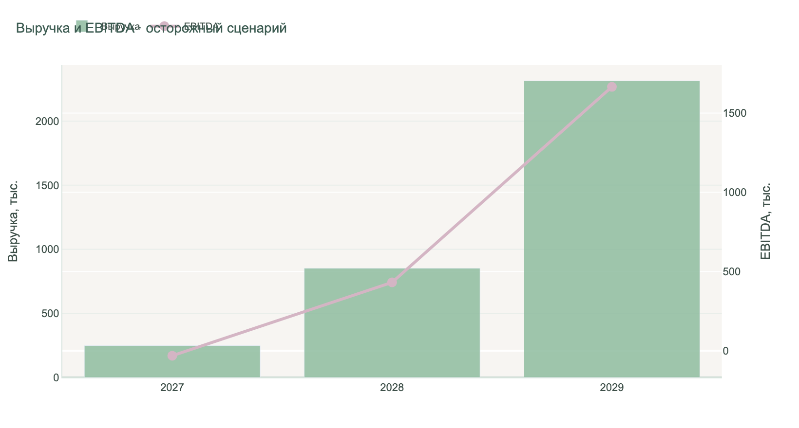
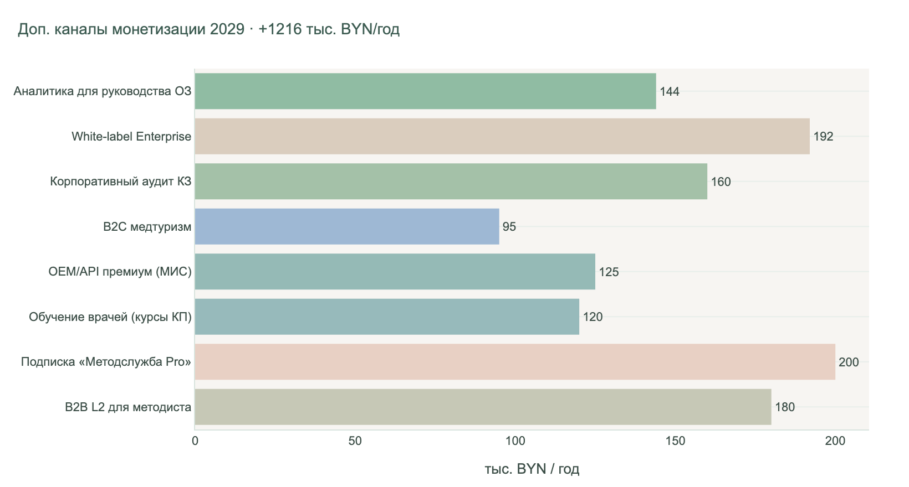
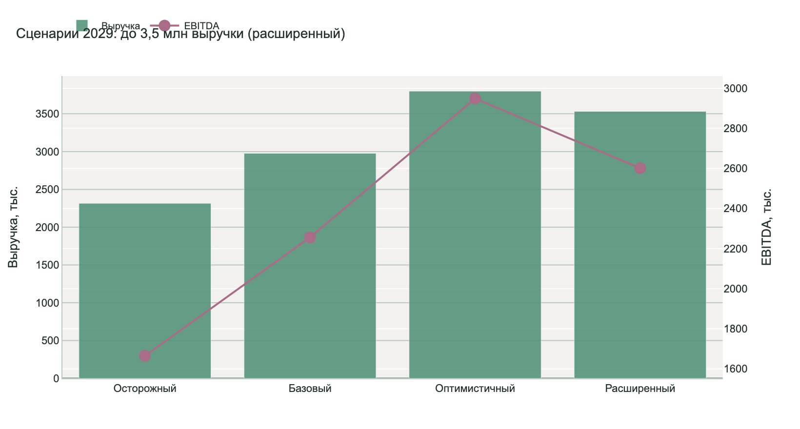
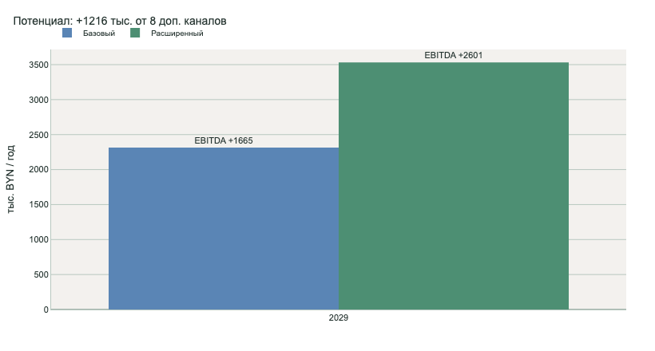
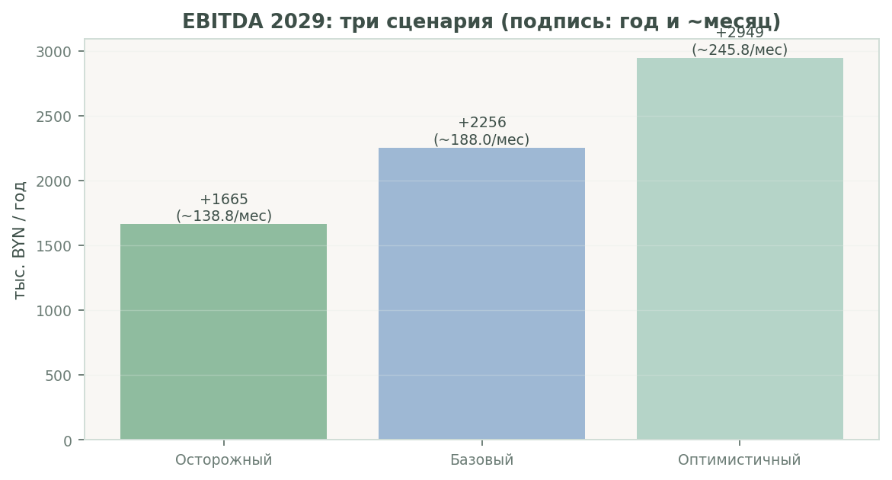
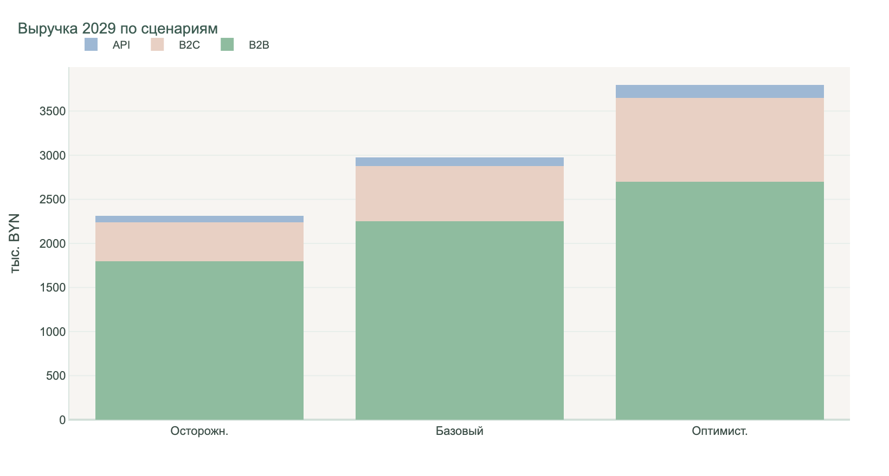
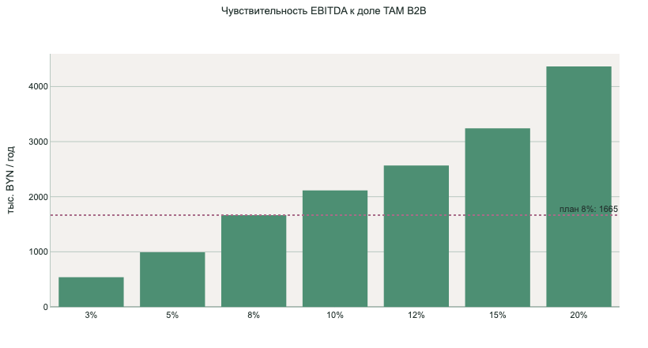
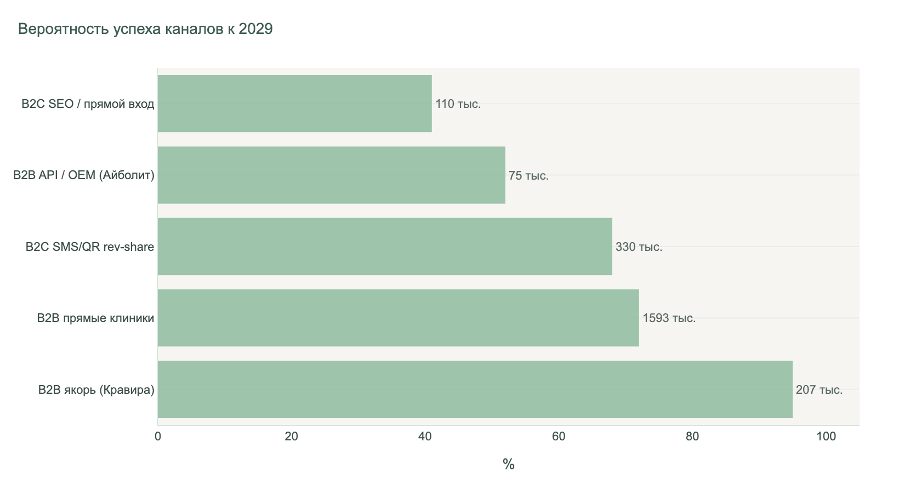
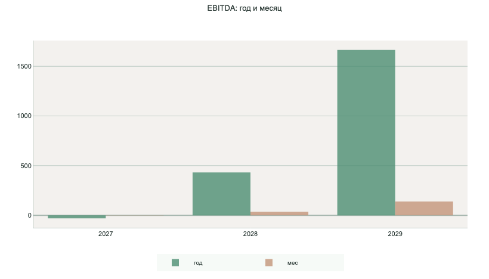
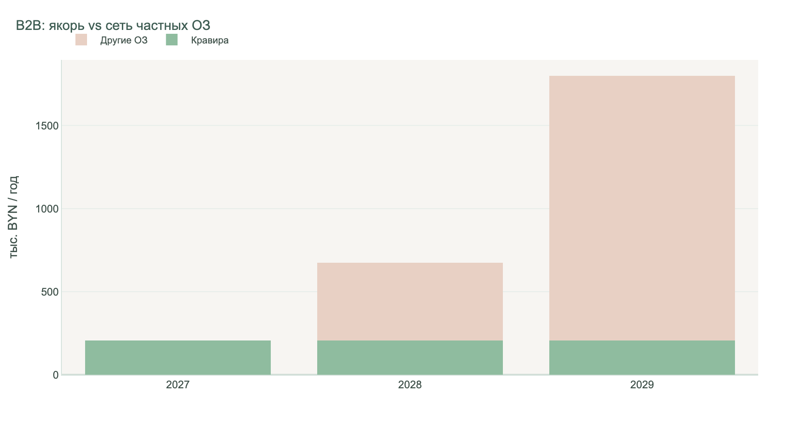
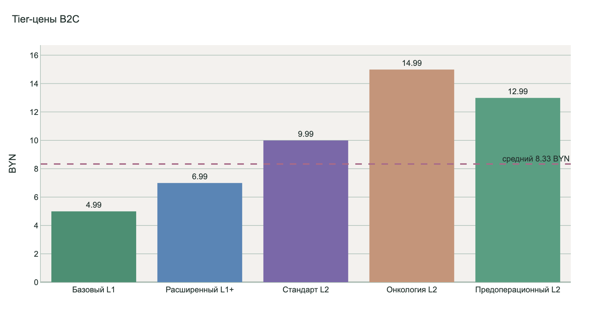
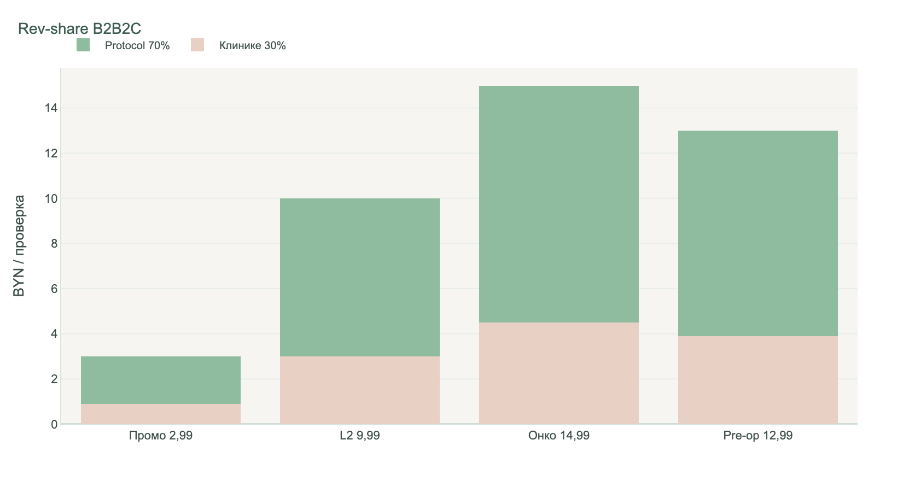
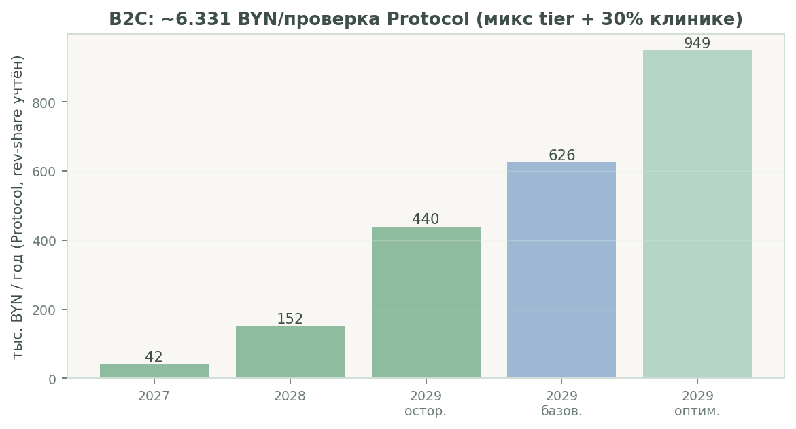
| Статья инвестиций | BYN | Срок |
|---|---|---|
| Интеграция API в МИС «Айболит» | 40 000 | Q3 2026 - Q1 2027 |
| B2C-витрина, ERIP, политика ПДн | 25 000 | Q4 2026 |
| Регистрация программы для ЭВМ (НЦИС) | 15 000 | Q3 2026 |
| Серверная инфраструктура якоря | 10 000 | Q4 2026 |
| Маркетинг пилота (кейс Кравира) | 20 000 | 2027 |
| Драйвер | Пояснение |
|---|---|
| Обязательная передача амбулаторных данных в ЦИСЗ (FHIR BY) | Рост штрафных и репутационных рисков |
| Отклонение пакетов при ошибках Bundle/Composition/НСИ | Доработки после подписи ЭЦП |
| Дефицит методистов при росте потока КЗ | Ручной аудит 2-5% потока |
| 478 клинических протоколов Минздрава | Невозможность ручного контроля каждого КЗ |
| Альтернатива | Охват | Слабость | Стоимость |
|---|---|---|---|
| Ручной аудит методслужбы | 2-5% потока | Не масштабируется | 34 BYN/проверенное КЗ |
| Зарубежные CDSS (UpToDate и др.) | N/A | Нет КП Минздрава РБ | Подписка USD |
| Свободные LLM-чаты | Ad hoc | Нет send_gate, ПДн | Непредсказуемо |
| Шаблоны МИС | 100% форма | Нет evidence_map | В лицензии МИС |
| Protocol L0 | 100% потока | КП РБ + ЦИСЗ + правила | 0,69 BYN/КЗ |